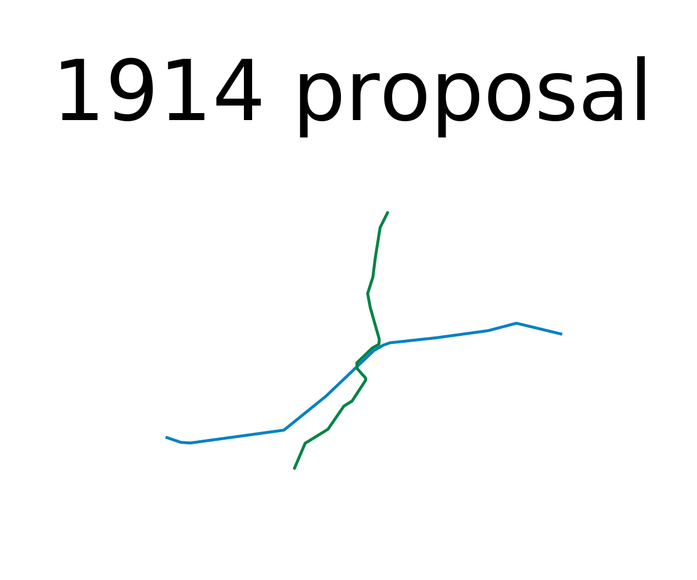
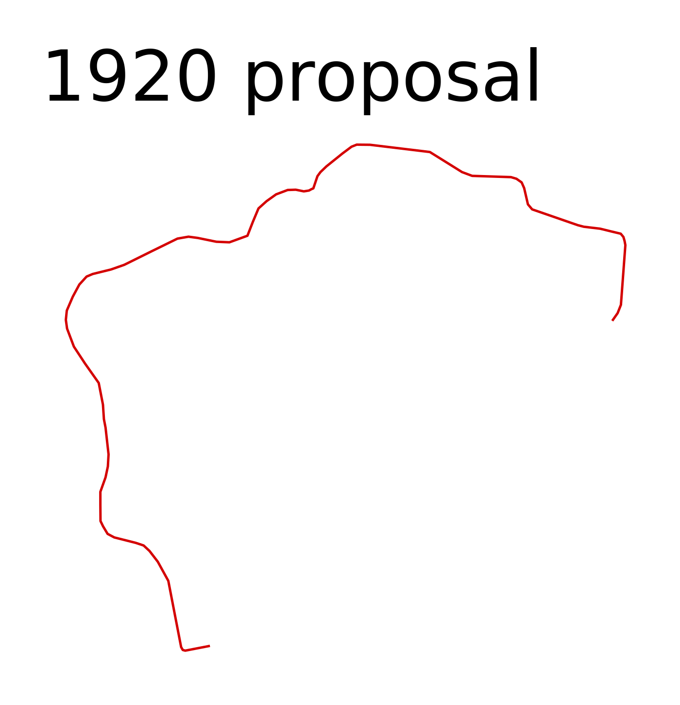
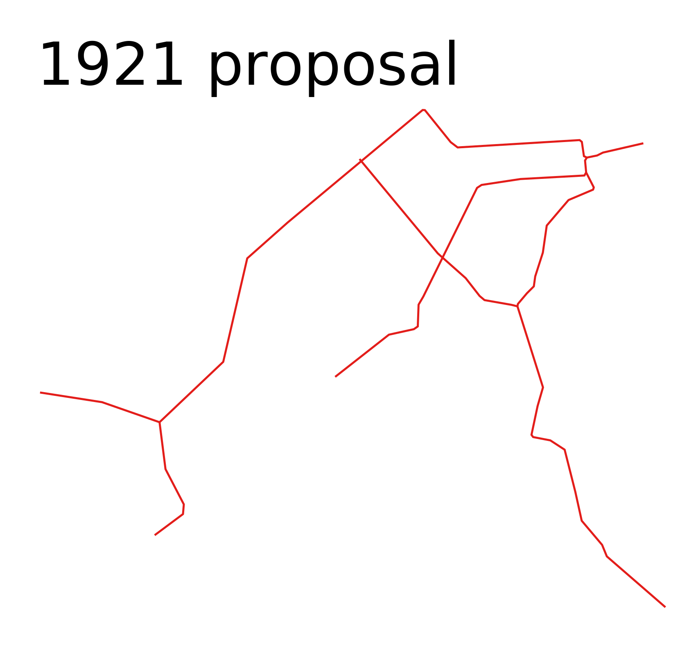
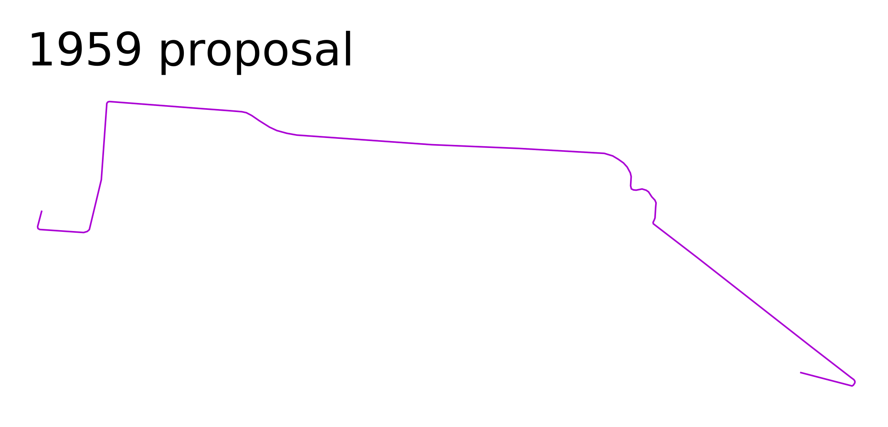

Unrealised Rapid Transit Plans
New York
1890 actual
1891 proposal (info)
1935 actual
1939 proposal (info)
1965 actual
1968 proposal (info)
2020 actual Chicago

1975 actual
1976 proposal (info)
2020 actual Boston
1892 proposal (info)
1915 actual
1917 proposal (info)
1945 actual
1945 proposal (info)
2020 actual San Francisco
1965 actual
1966 proposal (info)
2015 actual Seattle

1970 proposal (info)
2000 actual
2002 proposal (info)
2020 actual
2024 projected
2041 projected (info) Providence

1914 proposal (info) Cincinnati

1920 proposal (info) Habana

1921 proposal (info) New Orleans

1959 proposal (info)
--> smaller versions
Based on planned frequent midday service (notes).
Scale: = 10 km (30 CSS pixels per km)
Please send any corrections or questions to threestationsquare at gmail dot com.
See also: rapid transit timelines - miscellaneous timelines and maps